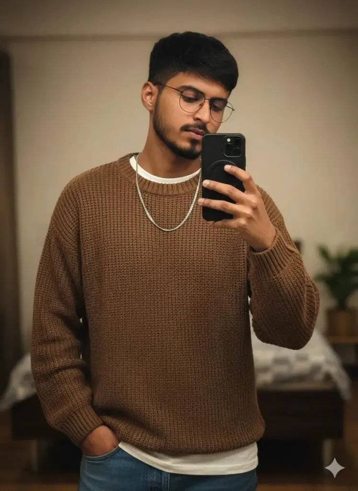

In this post i will give you Trending Boys Gemini Photo Editing Promtps.
Want more awesome prompts?
Join our community and get the latest viral prompts daily.
Follow on Instagram
? AI PROMPT
Ultra realistic, 8K resolution cinematic image of a person crouching beside a powerful black horse in a snow-covered mountainous landscape. Face with the face from the uploaded image, keeping the facial features exactly the same. wavy hair, and wears dark sunglasses, a cozy black sweater, grey cargo pants, and black boots. He crouches with one knee bent, holding the reins of the horse with a relaxed yet confident posture. The horse is muscular, with a glossy jet-black coat, flowing mane, and expressive eyes, wearing a simple leather halter. Snow blankets the ground with footprints and scattered rocks visible. In the background, soft-focus snow-covered hills, pine trees, and distant mountain peaks stretch under a clear blue sky. Snowflakes gently fall around them, adding depth and softness to the scene. The lighting is soft and natural, highlighting details like the texture of the snow, fabric folds, and hair strands. The overall mood is calm, adventurous, and majestic, evoking a sense of freedom and harmony with nature.

? AI PROMPT
A rugged, stylish man with Face with the face from the uploaded image, keeping the facial features exactly the same. and voluminous wavy hair styled back, wearing round dark sunglasses and a white open-collar shirt. He has a prominent black scorpion tattoo on the left side of his neck and wears layered black chains around his neck. The lighting is soft and warm, highlighting his side profile with a serious expression. The background is an indoor setting with blurred wooden wardrobe doors, creating a casual, intimate atmosphere.

? AI PROMPT
Create a retro vintage grainy but bright image of the reference picture but draped in a perfect white colour shirt and suit Pinteresty aesthetic retro pants. It must feel like a '90s movie hair baddie with a small flower bookey in one hand and other hand in pocket, romanticising a windy environment. The man is standing against a solid deep shadow and contrast drama, creating a mysterious and artistic atmosphere where the lighting is warm with

? AI PROMPT
Ultra-realistic mirror selfie of a stylish man 22 years oldwith glasses. He is wearing a loose brown sweater layered over a crisp white T-shirt, paired with blue jeans. A silver chain necklace adds a subtle accessory touch. He holds a modern smartphone in one hand, partially covering his same face, while his other hand rests casually in his pocket. The scene is set in warm indoor lighting, creating a cinematic, moody atmosphere with soft shadow"

? AI PROMPT
Create a retro vintage grainy but bright image of the reference picture but draped in a perfect red wine color
Pinteresty aesthetic retro shirt with white pant and holding a rose flower in hands. It must feel like a 90s movie and romanticising windy environment. The boy is standing against a solid wall deep shadows and contrast drama, creating a mysterious and artistic atmosphere where the lighting is warm with a golden tones of evoking a sunset or golden hour glow. The background is minimalist and slightly textured the expression on her face is moody, calm yet happy and introspective.

? AI PROMPT
Create a retro vintage grainy but bright image based on the reference picture but with the boy wearing a perfect plain red kurta in a Pinterest aesthetic, retro style reminiscent of a 90s movie.
The boy has black with brown shade hair, romanticising the windy environment.
He is standing against a solid wall with deep shadows and high contrast drama, creating a mysterious and artistic atmosphere where the lighting is warm with golden tones evoking a sunset or golden hour glow.
The background is minimalist and slightly textured, and the expression on his face is moody, calm yet happy and introspective

? AI PROMPT
A full-body, camera look-angle portrait of a handsome 22-year-old boy, approximately 5'5" tall. He is sitting on the ground in a stylish pose against a solid deep wine-colored wall, with deep shadows creating a 90s movie and romantic, windy environment. He is wearing a perfect red wine-colored, retro aesthetic shirt with matching pants and white sneakers. He has a silver watch and is holding a single rose flower in hand.
? AI PROMPT
The man is dressed in a sophisticated black suit with a crisp white shirt, creating a sharp contrast. He is holding an old book, engrossed in reading, with his gaze directed downwards at the pages. The lighting is warm with golden tones, suggesting a sunset or golden hour glow, casting deep shadows and dramatic contrast against a minimalist, slightly textured background. The overall atmosphere is artistic and mysterious, evoking a retro vintage, grainy yet bright feel reminiscent of a 90s movie. The image is captured from a side angle, and the man's expression is moody, calm, and introspective, enhancing the artistic and contemplative mood.
Create Viral Gemini Boys Photo With Prompts
follow this steps to create your image with just few clicks.
- Copy any prompt from above list
- Now click on above “Create Your Image” button
- Paste prompt in Gemini with your image
- Click on Generate button
- Your image is ready
I hope this prompts will help you to viral gemini boys photo with your face and realistic look.